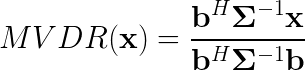
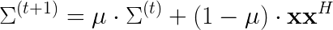

What is DASH?
DASH present some simple implementations of speech pre-processing algorithms. It has three main modules implemented: MVDR, speech masking and denoising autoencoders. It is optimized to run in real time on Nvidia Xavier.
Why?
MVDR beamformer
Using microphone matrix generates several separate channels of audio, which are related in time. Distances between microphones translate directly to differences in time of arrival of the signal to the microphone. This in turn creates offset of the signal at each microphone. Knowing direction of the signal, one may shift the signal by specific offsets and sum them to obtain constructive interference of signals arriving from the desired direction.
Beamformers work exactly this way. Delay-and-sum, the most simple beamformer, implements exactly this behaviour. However, such a naive approach cannot attenutate noise from other directions per se, only enhancing the desired one by a factor of a number of microphones. MVDR beamformer is a solution to an equation that maximizes SNR of signals coming from desired direction. The equation is as follows:
MVDR relies on two parameters: a transmission vector, which describes spatial configuration of the microphones and steering direction, and covariance matrix of noise. While the first one may be adjusted manually, covariance matrix requires determination of time-frequency bins which convey mostly noise. Due to sparsity of speech signal this feat is not as difficult as it seems. Simple MVDR implementation may contain VAD module, which tells the beamformer to update the matrix in the moments of silence. However VAD works holistically and cannot be reliably used if speech is rather continuous. There are multiple moments, where noise signal can be reliably obtained at selected frequencies. This is where the deep component kicks in.
Speech masking
Masks for speech may be obtained using various techniques, e.g. non-negative matrix factorization. In the demonstrator we use two different networks based on LSTM layers. LSTM layers contain time-dependency that helps it remember characteristics of speaker and background noise.
It should be said that proper speech masking may be used with good results to produce monophonic denoised speech signal. Effects are better if outputs from network are scaled by some factor and cut off. Implementation of such a model is attached in the demonstrator.
See Monophonic enhancement in documentation
Deep MVDR
Having obtained a mask for speech and noise, one can use it to determine in which moments appropriate source is active. When a given source is active, its' covariance matrix is updated using the following equation:
There are two matrices that we want to track. Noise covariance matrix is used by itself in the MVDR equation. In turn, principal eigenvector of speech covariance matrix corresponds to the estimated location of the loudest speech source at given frequency. This approach is a good replacement of traditional direction estimation methods, which required a proper composition of results for different microphone pairs.
Denoising autoencoder
Beamformer signal still contains noise, albeit attenuated. Properly trained autoencoder may be used as a post-processing step after speech beamforming. The issue is that the autoencoder as a neural network is sensitive to out-of-domain signal and cannot be easily generalized without a properly large dataset. In case of mismatched dataset the results may be in fact destructive. This is why the solution in the original demonstration does not have a postfilter.
Denoising autoencoders are however one of the tools of choice for reconstruction of speech is proper amount of data is provided. An example implementation is provided in the demonstration.
See Postfilter in documentation
Data
We have used LibriSpeech dataset for clean speech recordings (however they don't offer highest quality, but were sufficient for basic implementation). We also used recordings acquired in food courts in Gdańsk.